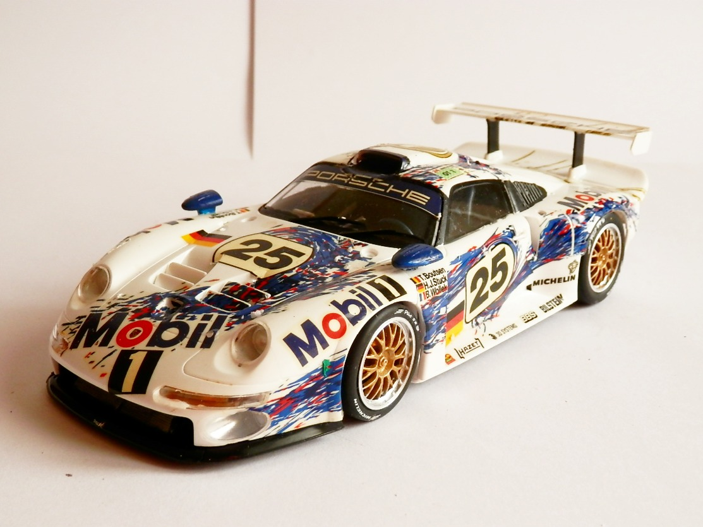
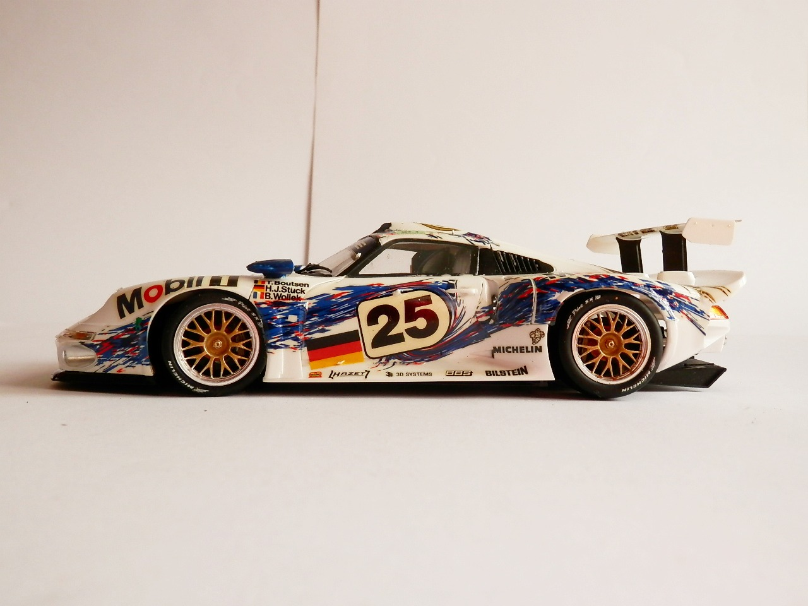
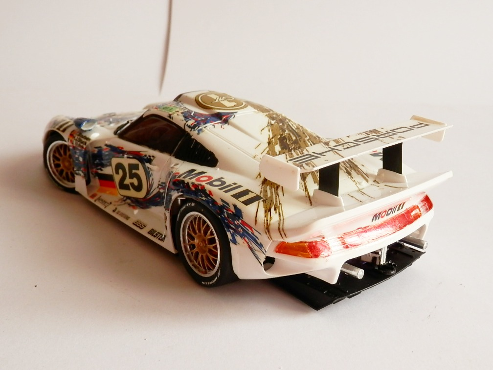

Auto e veicoli stradali · scale model archive
Porsche 911 GT1
Porsche 911 GT1 — Kit: Tamiya, Scale: 1/24. 24 Hours du Mans - Le Mans FR Juni 1996 Result: 2nd place (Hans Joachim Stuck/Thierry Boutsen/Bob Wollek)…

Photo gallery


English description
24 Hours du Mans - Le Mans FR Juni 1996 Result: 2nd place (Hans Joachim Stuck/Thierry Boutsen/Bob Wollek)
Stunning livery indeed
Descrizione italiana
24 Ore di Le Mans, giugno 1996. Risultato: 2° posto (Hans Joachim Stuck / Thierry Boutsen / Bob Wollek). Livrea davvero stupenda.